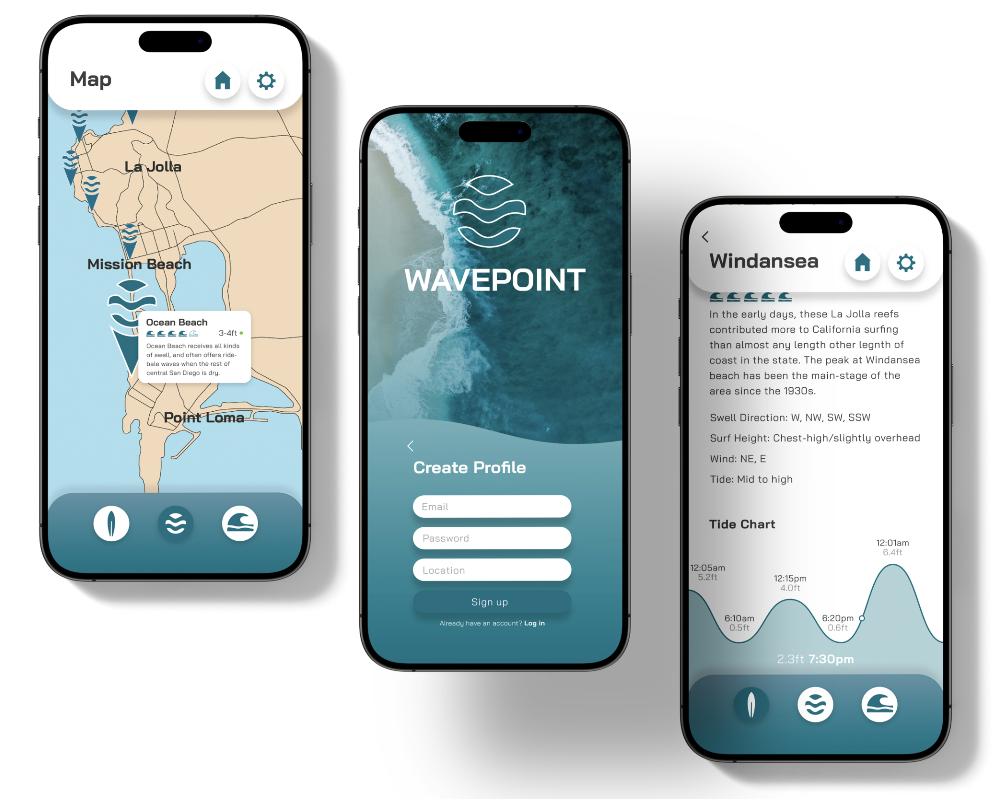
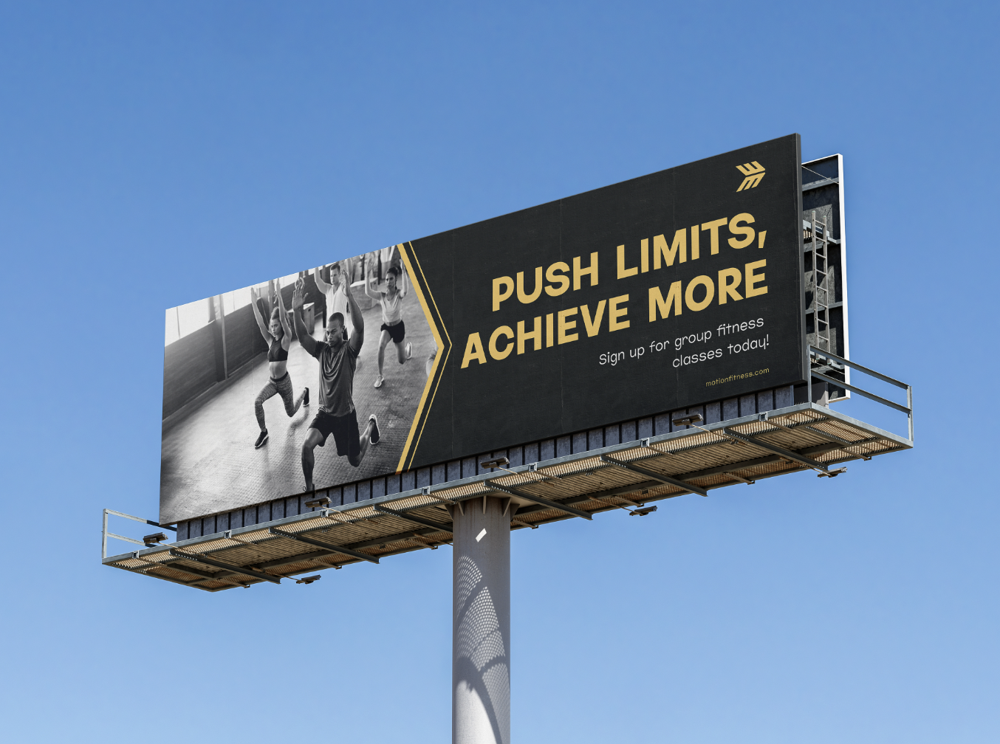
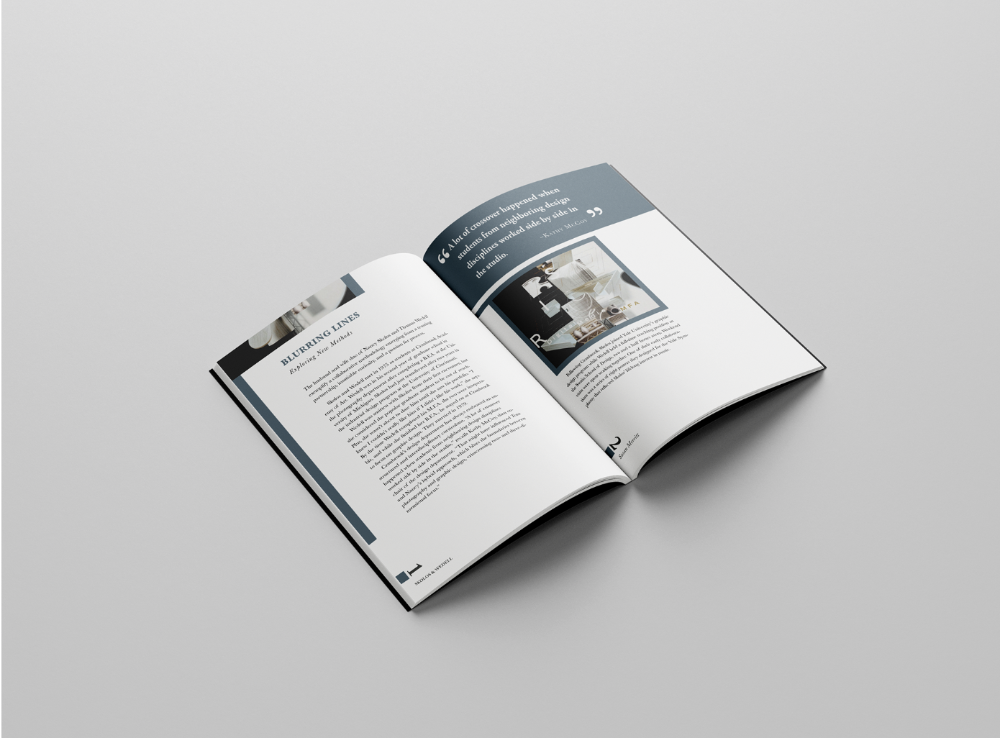

Throughout my career, I've developed brand identities and crafted websites with a strong emphasis on impactful visual communication and seamless user journeys.
A passionate brand and UI/UX designer with a deep understanding of user-centered design principles and a keen eye for visual storytelling. I thrive on crafting intuitive and engaging digital experiences that elevate brands and connect with audiences on an emotional level. I hold a Bachelor's Degree in Graphic Design from San Diego State University and am proficient in Figma, Webflow, HTML, Adobe Creative Suite, and Canva. Additionally, I possess a strong understanding of marketing strategies and channels.
My expertise spans the entire design process, from user research and wireframing to visual identity creation and interactive prototyping.
I have experience designing user interfaces, brand systems, and marketing collateral for a variety of platforms and products. I prioritize creating clean, accessible, and scalable designs that not only look stunning but also drive meaningful results. Furthermore, my marketing experience allows me to effectively promote and position brand products for maximum impact.
Say hello: rdiazgonzalez3158@sdsu.edu
See more from me: rdiazdesign.myportfolio.com
I'm skilled in typography, understanding how to choose the right fonts, establish a clear visual hierarchy, and create effective layouts. I can use typography to make text more readable, add visual interest, and communicate a brand's unique personality.
I'm proficient in designing user-centered interfaces that are both beautiful and functional. I understand how users behave and can create intuitive and engaging experiences across different digital platforms.
I'm adept at developing and implementing brand strategies that connect with target audiences. I can build cohesive brand identities that encompass everything from visual elements and messaging to the overall brand experience.
I'm experienced in designing for print, with a solid understanding of layout, color management, and the print production process. I can create visually compelling designs for brochures, posters, and other printed materials.



I begin by understanding your goals and target audience. Sketching is crucial for exploring ideas quickly and collaboratively. From there, I move to digital mockups, prototypes, and finally, polished designs, incorporating feedback at each stage.
I'm proficient in industry-standard tools including Figma, Adobe Creative Suite (Illustrator, Photoshop, InDesign), and other relevant software as needed for specific projects.
I focus on UI/UX design, brand identity development (logos, style guides, etc.), and print design (brochures, business cards, etc.).
Yes! I work with clients locally and remotely. Video calls and online collaboration tools make the process seamless. Contact me for more information!